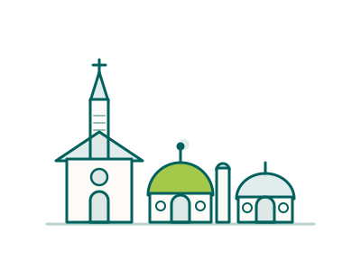

Finding your people
in Australia
A new job is only half of a move. The other half is belonging: faith, culture, friendship and a taste of home.

Belonging is what makes a move last
The clinicians who settle for good aren’t the ones with the biggest salary. They’re the ones who found their people — a place to worship, a familiar festival, a friend who cooks the food of home.
Australia is one of the most multicultural countries in the world. Almost half its people were born overseas or have a parent who was, and the big cities are a true mix of cultures, faiths and languages from every corner of the earth. The healthcare workforce itself is wonderfully international.
But here’s the honest part, and it’s the most important thing on this page: that diversity is not spread evenly across the country. The capitals are among the most cosmopolitan cities anywhere; large regional cities are reasonably mixed; and small country towns and the remote outback are predominantly Anglo-Australian, where a newcomer who looks or worships differently can feel far more visible. None of that means a place is unwelcoming, but it changes the day-to-day, and you deserve to know before you choose where to live.
Our promise in this guide is simple: we’ll tell you the truth about a town before you move there. Where your community already exists, what life tends to feel like for people from your background, and whether somewhere is likely to suit your family, honestly, with no pressure either way.
A place to worship, whatever your faith
Freedom of religion is protected in law, and there are active communities across all the major faiths. In the cities especially you’ll find established congregations across many traditions, though in smaller towns the choice narrows, sometimes sharply.
Churches of every tradition
From Catholic, Anglican and Uniting to Pentecostal, Orthodox and a wide range of ethnic-specific congregations, Christian communities are found in every city and most towns: many with services in languages other than English.
Mosques & Islamic centres
Long-established Muslim communities in the major cities run mosques, Islamic centres and schools, and halal food is easy to find. In regional and remote areas, mosques and halal options are far fewer and worth checking before you move.
Temples & cultural life
A large, active Hindu community supports temples and cultural associations in the cities, with festivals such as Diwali celebrated publicly, often as major city-wide events.
Gurdwaras & community
A fast-growing Sikh population maintains gurdwaras across the cities and a number of regional centres, offering worship, langar and a strong, practical welcome for new arrivals.
Temples & meditation
Buddhist temples and meditation centres reflect Australia’s diverse Asian communities, welcoming both heritage practitioners and newcomers to the practice.
Settled communities
Well-established Jewish communities are concentrated in Sydney and Melbourne, with synagogues, schools and kosher food. Many other faith communities are present too, mostly in the larger cities.
Faith communities are often the fastest route to friendship and practical help when you arrive: many run welcome groups, share local knowledge and lend a hand with the early settling-in. It’s worth reaching out before you even land. If your faith matters to you, tell us; it can shape which town is the right one.
Chances are, your community is already here, in the cities
Healthcare professionals come here from all over the world, and communities form where people settle — mostly around the capitals. Knowing where yours is established can help when you’re choosing a base.
Established diaspora networks
Large, active communities from the UK, Ireland, India, the Philippines, South Africa, China, Vietnam, the Middle East and across the Pacific mean cultural associations, social events and familiar faces are rarely far away in the cities.
Professional peer groups
Because so many clinicians have made this exact move, from the UK, South Africa, the UAE and beyond, you’ll find others in your profession who share your background and understand both the work and the journey.
Cultural festivals & events
Diwali, Eid, Lunar New Year, Holi, Vaisakhi and many more are celebrated openly and often city-wide: public, joyful occasions that make it easy to stay connected to your heritage and share it.
Community language & schooling
Many communities run weekend language and culture schools so children stay connected to their heritage language and traditions while they grow up as young Australians.
Social media & local groups
Active online groups for almost every nationality and city are where newcomers ask questions, find housing, swap recommendations and arrange the first real-life catch-ups.
Sport & shared interests
Cricket, football, netball, cultural dance, choirs and hobby clubs are some of the easiest, most natural ways to meet people who share your interests and, often, your background.
Diversity changes enormously by place
Australia is diverse on average, and the average hides a wide gap between a city suburb and a remote town. If your faith or culture is central to your life, where you settle matters as much as the job.
The big cities
Sydney · Melbourne · Perth · Brisbane · AdelaideAmong the most multicultural cities on earth. In many suburbs the majority of residents were born overseas, you’ll hear dozens of languages, and almost every faith, cuisine and community is well represented. For most people from any background, the capitals feel cosmopolitan and easy to belong in.
This is where established diaspora communities, places of worship, cultural grocers and international schools are concentrated, and where being from somewhere else is completely ordinary.
Large regional cities
e.g. Newcastle · Geelong · Townsville · Cairns · ToowoombaThe bigger regional centres are reasonably diverse and growing more so, partly because healthcare and universities draw people from everywhere. You’ll usually find at least one mosque, temple or cultural association, some international groceries, and other migrant families, though less choice than a capital, and it varies a lot from town to town.
Small towns & the remote outback
Inland NSW/QLD/SA · remote WA & NT communitiesSmall country towns and remote areas are predominantly Anglo-Australian, alongside significant Aboriginal and Torres Strait Islander populations in parts of the outback. There may be no mosque, temple or gurdwara for hundreds of kilometres, little or no halal or cultural food, and you may be one of very few people of your background in town.
Being honest: most people find country Australians warm, direct and welcoming, and many newcomers thrive in the close-knit pace. But as a visible minority you will be more conspicuous, and a minority of people do encounter staring, awkward assumptions or, occasionally, outright prejudice. It’s not the norm, but it’s real, and it weighs differently for a family than for a single clinician on a fixed contract.
So a Black clinician from South Africa, a Muslim family from the UK or a Hindu radiographer from India might love a busy Perth or Melbourne suburb, and find a tiny outback town isolating. That’s exactly the kind of trade-off we’ll talk through with you, town by town, before you accept anything. Sometimes the answer is a regional city rather than a remote one; sometimes it’s choosing the suburb carefully. There’s almost always a way to get both the role and the community, it just takes an honest conversation first.
First Nations Australia & the ‘fair go’
Australia has the world’s oldest continuous living cultures, cared for by Aboriginal and Torres Strait Islander peoples for more than 60,000 years. In remote and regional areas you may work closely with Aboriginal communities.
In healthcare this matters practically. Many services place real emphasis on cultural safety: care that respects a patient’s culture, history and identity, and you may take part in cultural awareness training, hear an Acknowledgement of Country at the start of meetings, or work alongside Aboriginal Health Workers. You don’t need to know all of this on arrival; a willingness to learn and to show respect goes a very long way, and it’s one of the quiet privileges of working here.
Australians talk a lot about a “fair go”, the idea that everyone deserves a fair chance regardless of background. It’s a genuine part of the national character and you’ll feel it in how flat, first-name and unpretentious workplaces tend to be. Like any ideal it isn’t lived out perfectly everywhere, but it’s a real and widely-held value, and it sits behind much of the warmth newcomers describe.
If you’re considering a remote role with a large Aboriginal community, we’ll talk you through what the work and the cultural context are like, so you arrive prepared and respectful rather than surprised.
A country that welcomes you as you are
Australia has strong anti-discrimination law covering race, religion, sex, sexual orientation and disability, at work and in everyday life. The protections apply everywhere; the lived experience is warmest in the cities.
LGBTQ+ communities
Marriage equality has been law since 2017, protections are nationwide, and the cities have visible, thriving communities and major events such as Sydney’s Mardi Gras. Smaller towns are often quieter and more conservative, but the law protects you everywhere.
Equality at work
Workplaces, including across the health system, take inclusion and anti-discrimination seriously under the Fair Work framework. You should expect to be treated with respect and fairness as a matter of course.
Families of every shape
Single parents, blended families, same-sex parents and multi-generational households are all an ordinary, accepted part of Australian life.
The small comforts that matter most
It’s the little things that catch people out: the spice you can’t find, the snack from childhood. In the cities most are surprisingly close; in the regions, most people end up planning ahead and ordering online.
Food & groceries
The big supermarkets, Woolworths, Coles and ALDI, carry growing world-food aisles, and the cities have large Asian, Indian, Middle Eastern, African and European grocers. Halal, kosher and a huge range of cultural foods are easy to find in metro areas; online ordering fills most gaps elsewhere.
Restaurants & community kitchens
From South Indian and Filipino to Lebanese, Vietnamese, Korean and beyond, city restaurants serve the real thing, and community events where home cooking is shared generously are some of the best ways to meet people.
Festivals & traditions
The celebrations you grew up with are very likely marked here too, often publicly in the cities. Keeping your own traditions alive, and being invited into others’, is part of what makes life here rich.
Halal
Halal food is widely available in the cities: many mainstream supermarkets and butchers stock halal-certified meat, and metro areas have dedicated halal butchers, grocers and restaurants. In regional and remote areas the choice narrows considerably, so it’s worth checking what’s available in a specific town before you commit.
Kosher
Kosher options are concentrated in Sydney and Melbourne, which have kosher stores, butchers and delis alongside established Jewish communities. Elsewhere it’s mostly online or through the local community, the peak Jewish bodies in the useful links are the best people to point you to current suppliers.
African & South African
Biltong, boerewors and braai staples, plus West and East African groceries, are available through specialist stores in the cities and a number of online retailers that ship Australia-wide, a real comfort if you’re moving from South Africa or elsewhere on the continent.
How to find your people, quickly
Community rarely just appears, but a little intention in your first weeks makes all the difference. These are the things we suggest to every clinician we place, and they work.
Connect before you arrive
Search online for groups linked to your nationality, faith or city. Introducing yourself early means a friendly contact or two before you even land.
Choose your suburb with care
In a big city the suburb shapes everything: community, schools, places of worship, the food shops. We’ll help you pick one that fits your family, not just your commute.
Use your workplace
Colleagues are often your first community, and many have made the same move. Ask them where to worship, shop and gather, they’ll know.
Join one regular thing
A weekly class, sports team, choir or place of worship gives your week an anchor and the same faces each time, which is how acquaintances become friends.
Bring your culture with you
Cook for new neighbours, share your festivals, contribute what’s yours. Belonging flows both ways, and people love being welcomed into something new.
Ask us
We know the makeup of the towns we place people in, and we’ll be honest about where you’re likely to find your community, and where you might not.
A curated directory to help you belong
The job is one part of it. The rest is finding your people, keeping your traditions and knowing where to turn — so we’ve gathered those networks and services in one place.
Professional communities
Connect with clinicians who’ve already made the move. These groups are a good place to ask the practical questions, compare notes and start building your network before you even arrive, a quick search surfaces the most active communities in your field.
Diaspora communities
Find your community before you even arrive: people who share your language, culture and the experience of moving.
Festivals & cultural events
Celebrate your own culture and discover Australia’s. There’s something happening all year round.
Language & cultural schools
Help your children stay connected to their heritage language and culture as they grow up here.
Local & social groups
One of the easiest ways to feel at home is to get involved locally. Find people who share your interests.
Sport & shared interests
Joining a local club is one of the quickest ways to make friends, stay active and become part of your community.
LGBTQIA+ communities
Australia is one of the world’s most LGBTQIA+-inclusive countries, with welcoming communities, professional networks and events in every major city.
Faith, accessibility & wellbeing
Moving abroad doesn’t mean leaving your faith or your support behind. Places of worship, accessibility services and mental-health support, the networks that help you look after yourself and the people you love.
These are starting points, not endorsements: each link opens an external site we don’t control, and communities come and go. If you can’t find yours, or you’d like a warm introduction to people who’ve walked the same path, tell us where you’re moving and what matters to you. See also our Useful contacts guide.
Relocating is hard, and the months after arriving are when it tends to land. Both of these are free, and neither is a last resort.

People worry, quietly, about whether they’ll fit in, whether they’ll find somewhere to pray, food that tastes like home, friends who understand them, and whether they’ll be made to feel welcome. I take those worries seriously, because the answer depends on where you go. A family might feel completely at home in a diverse city suburb and quite isolated in a remote town with the same job title. My job is to tell you that honestly, before you decide, not after. There is almost always a way to find both the right role and the right community. It just starts with a frank conversation, and I’d much rather have it early.
SophieCEO & Founder, Ethicare Resourcing
The questions people ask us about belonging
What’s it like as a person of colour or visible minority in a small town?
It depends a lot on the town, and we’ll always give you an honest read on a specific one. In the big cities, being from anywhere is completely ordinary and most people feel very much at home. In small country towns and remote areas, which are predominantly Anglo-Australian, you’ll be more visible, and while most country Australians are warm and welcoming, a minority of people do experience staring, clumsy assumptions or occasional prejudice. It’s not the norm, but it’s real. For many single clinicians on a fixed contract it’s a non-issue; for a family putting down roots it can matter more. If it’s a concern, a diverse regional city or a well-chosen city suburb is often a better fit than a remote posting, and we’ll help you weigh it up.
Will I be able to practise my religion freely?
Yes. Australia has freedom of religion, and active communities exist across all the major faiths, especially in the cities. Places of worship, religious schools and cultural associations are well established in metro areas. In regional and remote places the nearest mosque, temple or gurdwara may be a long way off, so if regular worship is important to you, it’s worth checking what’s available in a particular town before you move.
Is there a community of people from my country?
Almost certainly, particularly in and around the capitals. Australia’s healthcare workforce is highly international, with established communities from the UK, Ireland, India, the Philippines, South Africa, China, the Middle East and many more, with social groups, festivals and online networks. These cluster in the cities, so even if your role is regional, many people choose a city base or visit regularly to stay connected.
How welcoming is Australia to LGBTQ+ people?
Marriage equality has been law since 2017, anti-discrimination protections are nationwide, and the cities have visible, thriving communities and major events. Smaller towns are often quieter and more conservative in feel, but the legal protections apply everywhere. As with everything on this page, we’re happy to be candid about what a particular community is likely to feel like.
Can you help me choose somewhere I’ll actually belong?
That’s one of the most valuable things we do. Tell us your background, your faith if it’s part of your life, what matters to your family and the kind of role you want, and we’ll be honest about which places are likely to suit, and which probably won’t. The goal is a move that lasts, not just a job that’s filled.
Related guides
Wondering if you’ll find your people?
Tell us a little about your faith, culture and what matters to your family, and where you’re thinking of settling. We’ll give you an honest picture of the communities there, and help you connect before you arrive.
Ethicare Resourcing · your guide to a life and career in Australia.